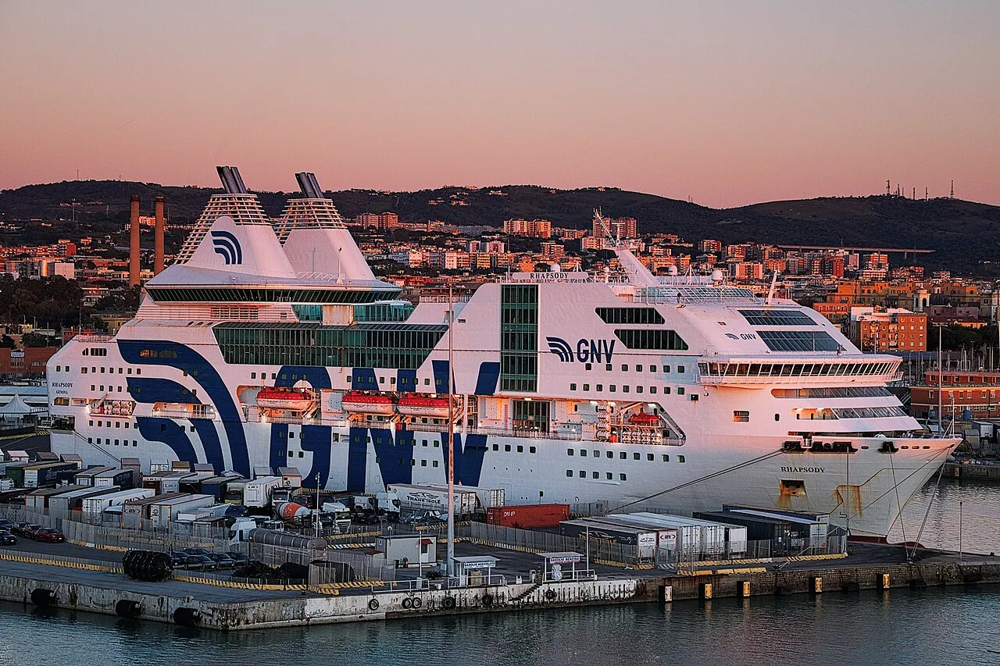
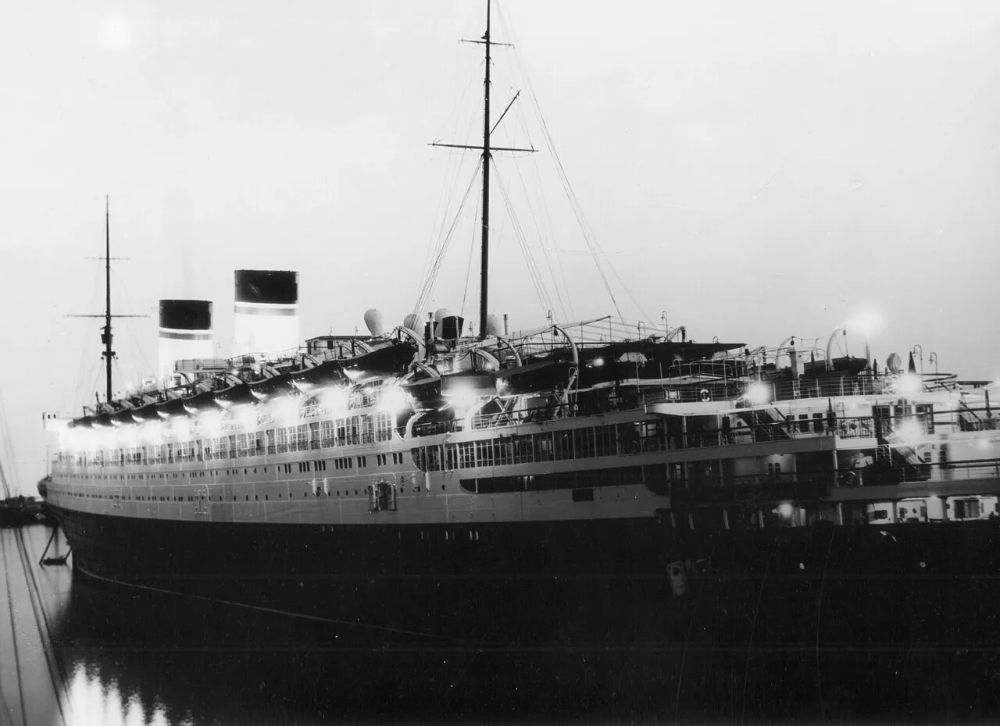
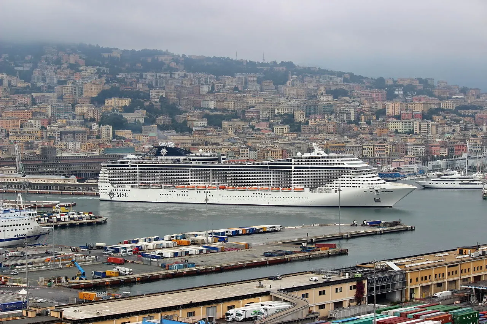
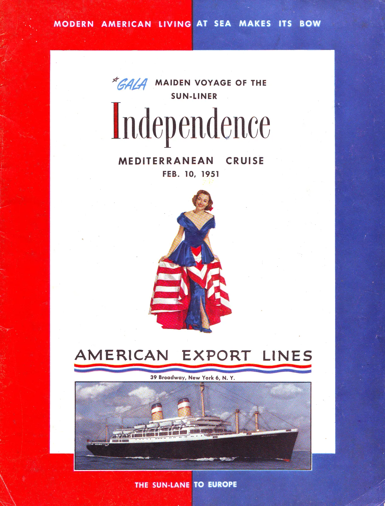

Genoa: My Underrated Italian Treasure
Captain's Logbook: Genoa
I stood at the rail as we glided into Genoa harbor and thought about young Cristoforo Colombo walking these same quays in 1451, dreaming of horizons beyond what any map could promise. The Porto Antico — once one of the busiest harbors in the Mediterranean for centuries when the Republic of Genoa ruled these waters — now spreads before me redesigned by Renzo Piano, the aquarium sphere and Bigo panoramic lift standing where merchant galleys once loaded spices and silk. This city built its fortune on the sea: in 1099, twelve Genoese galleys and 1,200 soldiers including fearsome crossbowmen sailed to the First Crusade and helped take Jerusalem, earning Genoa trading privileges that would fuel her maritime empire for generations.

The historic center starts literally at the dock gates and swallows you whole. Narrow caruggi alleys twist between 12th-century palaces and tiny shops selling sciacchetrà wine and pesto by the kilo. I got happily lost for hours, emerging at Piazza De Ferrari just as the fountain started dancing. But what truly made me catch my breath were the Palazzi dei Rolli — 42 magnificent Renaissance palaces recognized as UNESCO World Heritage in 2006. Here's the marvel: from the 16th through 17th centuries, Genoa maintained an official register called the Rolli, a list of noble palaces grand enough to host visiting dignitaries. When a cardinal or duke arrived, the Senate would select a palace from the register based on the visitor's rank, and that family had the honor (and expense) of hosting. We toured Palazzo Rosso and I stood in rooms painted floor-to-ceiling by Van Dyck while chandeliers dripped crystals above us, imagining Spanish ambassadors and French princes being received in these same gilded halls.
I had lunch at Antica Sciamadda — farinata and trofie al pesto — chickpea flatbread hot from the wood oven and pasta so green it glowed. In the afternoon I took the funicular up to Castelletto for the panoramic view locals call "the most beautiful in the world." Before leaving, I walked past the Casa di Colombo, the reconstructed house where Columbus was born, its modest stone walls a humble beginning for a man whose ambition would mirror his city's own seafaring audacity. The pros: authentic Italian port city with almost no cruise crowds, layered with centuries of genuine maritime history. The cons: the caruggi can feel intimidating at first, but they're completely safe in daylight and full of life.
The waterfront drew me back as the afternoon light softened over Genoa. The air carried a mix of salt and something sweet from a nearby bakery, and I watched the locals moving through evening routines with the quiet confidence of people who know exactly where they belong. A bench overlooking the water offered the kind of comfortable silence that comes only after a day of genuine discovery rather than mere sightseeing — walking further than planned, seeing more than expected, every extra step a gift rather than a burden.
The walk back toward the ship gave me time to process everything the day had offered. Pleasantly tired legs told the story of a day spent exploring every reachable corner, and I noticed a clear difference between visiting a place and truly experiencing it. Despite the unfamiliar language and customs, Genoa had offered unexpected warmth. The shopkeepers were patient with halting attempts at communication, generous with recommendations, and quietly proud of their home. The light hit buildings differently as the day wore on, painting long shadows across cobblestones that had felt a thousand years of footsteps.
What surprised me most, however, was how quickly this place felt familiar. Families gathering for the evening meal, children playing in the squares where children have always played, the sound of laughter carrying across the water, and the smell of cooking drifting from open windows. I heard church bells marking the hour somewhere nearby, felt the cool stone of an ancient wall rough beneath passing fingers, and tasted the last crumbs of a pastry bought from a smiling street vendor. Yet beneath all this warmth, there was also an honest roughness to Genoa — peeling paint on some facades, uneven pavements, the occasional sharp word between neighbours. But that is what makes a real place real, and no amount of polish could improve it. The imperfections are what people remember, and the flaws are what bring them back.
As the ship prepared to depart and Genoa began to shrink into the distance, I reflected on what the day had given me. Arriving as a visitor, departing with something more personal — a sense of connection to a place that might never be seen again, yet would be carried always. The morning coffee at a harbour café, the afternoon light on worn stone walls, the kindness of strangers who answered my curiosity with pride in their home. These final journal notes will be read years from now, carrying exactly the same feeling: gratitude, wonder, and the quiet ache of leaving somewhere that surprised me into caring.
Tears came unexpectedly — not from sadness, but the quiet grace of standing where so many have stood before, each carrying their own story across the water.
What I Learned: Every port teaches something to those willing to listen. Genoa offered a reminder that the best travel experiences rarely come from checking boxes on a list — they come from the unplanned moments, the chance encounters, the flavours and sounds that lodge in memory long after the ship has sailed. The lesson was to slow down, to notice what might otherwise be hurried past, and to trust that a place reveals its heart to anyone patient enough to wait. Looking back, the real gift was not what was seen but how it changed the way of seeing.
The Cruise Port
Genoa's cruise terminal provides a solid first impression with modern facilities including clean restrooms, tourist information counters with helpful multilingual staff, and a small selection of shops near the exit. The terminal connects to the city centre via regular shuttle buses running throughout port hours, with taxis and rideshare options readily available at the main exit. Most cruise lines offer complimentary shuttle service to the main visitor areas during peak season.
Wi-Fi is available in the terminal building for checking directions and contacting local transport services. Currency exchange desks operate near the information counter, and luggage storage is offered for independent explorers who want to move freely without bags — the cost is typically five to ten dollars per bag for the day. The terminal building also provides wheelchair-accessible restrooms and ramps connecting all levels. Check with your ship's shore excursion desk for shuttle schedules and accessibility information before disembarking.
Getting Around Genoa
Everything worth seeing is walkable from the ship – Genoa is one of the few big ports where you truly don't need transport.

Most cruise ships dock at Genoa's main terminal, where taxi ranks and shuttle bus stops are within a short walk of the gangway. The terminal area has restrooms, a tourist information desk with local maps, and Wi-Fi access for looking up directions or contacting local transport services. Fares from the port to the main sightseeing district typically run eight to fifteen dollars by taxi each way, or two to five dollars using public transit where available.
For wheelchair users and those with mobility challenges, the terminal provides accessible pathways from the ship to the main transport hub. Taxis with wheelchair-accessible vehicles can be arranged in advance through the ship's shore excursion desk. The local bus system generally has low-floor buses on major routes, though smaller shuttle services vary in their accessibility features.
Walking is rewarding for moderate-energy explorers — many of Genoa's key attractions lie within a comfortable stroll of the port area. For those preferring not to walk, rideshare apps work well here and offer predictable pricing. Return transport is straightforward: taxis queue at major attractions, and the ship's shuttle (if offered) runs regular loops until 30 minutes before sailing time.
Genoa Port Map
Interactive map showing cruise terminal and Genoa attractions. Click any marker for details.
Excursions & Activities
Ship Excursions vs Independent Exploration
Ship excursion packages to Genoa's main attractions typically cost $75–150 per person for half-day tours and $120–200 for full-day experiences including lunch. These provide the security of guaranteed return to the vessel and professional English-speaking guides, making them worth considering if this is your first visit or if you prefer structured itineraries with all logistics handled. The trade-off is flexibility — ship tours follow fixed schedules and often move at group pace rather than your own.
Independent exploration is both practical and rewarding here. Local transport from the port to the main sightseeing areas costs approximately $10–18 by taxi each way, or $3–6 using public transit. Walking tours organized by local operators typically run $25–40 per person and offer a more intimate experience than larger ship-organized groups. Book ahead online where possible, especially during peak cruise season from May through September, as the most popular tours sell out quickly when multiple ships are in port simultaneously.
What to See and Do
The most popular activities in Genoa combine historical exploration with cultural immersion. Key landmarks are accessible by foot, shuttle, or a short taxi ride from the cruise terminal, making independent visits straightforward for confident travelers. Museum entry fees generally range from $10–20, with many offering reduced admission during off-peak hours or on specific free-entry days. Student and senior discounts are widely available at most cultural institutions.
Active travelers will find walking tours of the historic quarter or waterfront areas provide excellent exercise with rewarding views and outstanding photo opportunities. Those seeking a more relaxed pace can enjoy waterfront cafés, local artisan shops, and scenic viewpoints perfect for people-watching. Budget-conscious visitors should note that eating where locals eat — slightly away from the main tourist streets — typically saves 30–40% on meal prices while offering more authentic regional cuisine and a genuine taste of daily life.
Booking Advice
Ship excursions offer the security of guaranteed return to the vessel and are worth considering for logistically complicated destinations or first-time visitors who prefer a structured experience. For straightforward port cities with good infrastructure like Genoa, independent exploration typically provides better value and far more flexibility. Pre-book museum and attraction tickets online during peak season to avoid queues that can stretch to 30 minutes or more at popular venues. Always confirm your ship's all-aboard time before planning your day — and set a phone alarm for 30 minutes before departure. A comfortable pair of walking shoes and a refillable water bottle are your two best investments for any port day.
Depth Soundings Ashore
Practical tips before you step off the ship.
The medieval alleys are narrow and atmospheric – embrace getting lost; that's when Genoa reveals her secrets.
Plan your day around your energy level and interests. The main historic sites require moderate walking over mixed terrain including cobblestones, slopes, and occasional stairs, making comfortable footwear essential for an enjoyable experience. For low-walking alternatives, the waterfront area near the terminal offers charming cafés, gentle strolling paths, and harbour views without the need to tackle hills or stairways — a perfectly valid and enjoyable way to experience Genoa at a gentler pace.
High-energy explorers can cover the major sites on foot in a full day, but bring water and pace yourself, especially in warmer months. Carry local currency for small vendors and market stalls — while restaurants and major attractions generally accept credit cards, street sellers and taxi drivers often prefer cash. Apply sunscreen regardless of the forecast, and bring a light layer for air-conditioned museums and cool church interiors.
Set a phone alarm for 30 minutes before your ship's all-aboard time. The ship will not wait for late passengers, and arranging your own transport to the next port is both stressful and expensive. If you are exploring independently, keep the port's taxi number saved in your phone as a backup plan for getting back on time.
Frequently Asked Questions
Q: Is Genoa worth it?
A: The most underrated Italian port – come for the surprise factor.
Q: Best thing?
A: Just wander the caruggi and visit one Rolli palace.
Q: How long for historic center?
A: 4–6 hours is plenty.
Q: Walk from port?
A: Yes – literally step off into the old town.
Last reviewed: February 2026
Weather & Best Time to Visit
Frequently Asked Questions
Q: What's the best time of year to visit Genoa?
A: Peak cruise season offers the most reliable weather and best conditions for sightseeing. Check the weather guide above for specific month recommendations based on your planned activities.
Q: Does Genoa have a hurricane or storm season?
A: Weather patterns vary by region and season. Check the weather hazards section above for specific storm season concerns and timing. Cruise lines closely monitor weather conditions and will adjust itineraries if needed for passenger safety. Travel insurance is recommended for cruises during peak storm season months.
Q: What should I pack for Genoa's weather?
A: Essentials include sunscreen, comfortable walking shoes, and layers for variable conditions. Check the packing tips section in our weather guide for destination-specific recommendations.
Q: Will rain ruin my port day?
A: Brief showers are common in many destinations but rarely last long enough to significantly impact your day. Have a backup plan for indoor attractions, and remember that many activities continue in light rain. Check the weather forecast before your visit.
Photo Gallery


Image Credits
- genoa-1.webp: WikiMedia Commons (CC BY-SA)
- genoa-2.webp: WikiMedia Commons (CC BY-SA)
- genoa-3.webp: WikiMedia Commons (CC BY-SA)
- genoa-4.webp: WikiMedia Commons (CC BY-SA)
Images sourced from WikiMedia Commons under Creative Commons licenses.